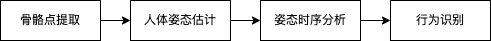
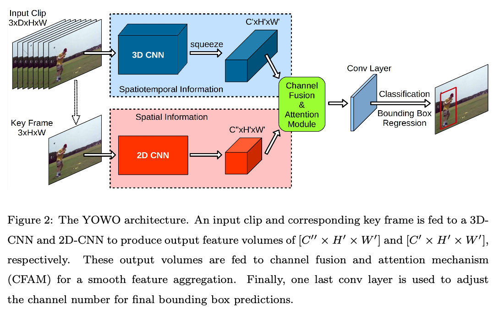
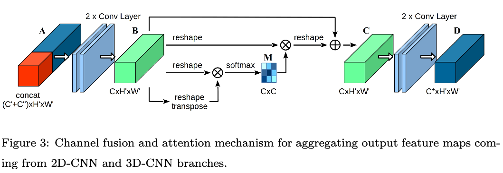

行为识别目前还是一项比较新的课题, 因为对于行为的检测通常涉及视频流中的图像时序信息. 相比于 2D Conv, 直接使用3D conv进行的训练并不能很好的保持模型的实时性, 因此基于此的项目落地比较困难. 针对目前的实时行为检测的问题, 比较精炼的解决方法如 SlowFast 通过使用两条pathway分别提取慢信息和快信息并合成得到结果, X3D 通过基于2D卷积模型,在不同维度上进行分别的升维测试, 得到了低参数量且高性能的实时视频分类模型.
在学习方法上进行划分, 目前的行为识别主要可以划分为 Detection, Skeleton-based 和 Video-Understanding 三种.
基于骨架(skeleton-based)的行为检测流程大致如下:

该方法存在的主要问题是模型的性能经常收到人群密度的影响, 通常人群越多时, 在提取骨骼点后进行的姿态估计就越不稳定, 并且可能因为人员的重叠导致姿态预测出现问题. 同时, 在涉及多人的行为检测, 如打架行为时, 可能因为多个人员重叠在一起导致无法准确判断骨骼点的位置.
该方法下比较有名的模型包括 OpenPose, AlphaPose, MMAction2 等骨骼点检测框架
该方法主要延续了2D卷积的思路, 通过将各个行为作为单独的类别, 通过图像分类的方式将不同的行为区分出来, 该方案的主要局限在于无法依赖时序信息判断行为的持续, 同时可能遇到不同行为中可能会遇到相同的中间行为帧, 导致在训练过程中的整体效果变差.
该方法偏向于3D卷积, 主要思路为基于时序进行判断. 一般来说该方案的稳定性与效果会比前两种好不少, 因为很多行为都会对时序有较强的依赖, 通过综合考虑可以减少detection中的误检测的问题, 并且也没有skeleton-based中的人员重叠导致的骨骼点难以检测的问题.
但是该方法的主要问题在于3D卷积的开销很大, 一般很难作为实时检测模型进行使用. 同时由于时序信息的特殊性, 对于数据集的标注也更加困难, 这导致自己制作数据集的难度较大.
该方法下比较有名的有SlowFast, X3D等时序视频理解模型.
类似 Faster R-CNN 这种 two-stage 网络在时序行为检测上存在的问题:
YOWO 的思路为对于需要判断的当前帧, 提取出他的2D特征, 并且结合前序多帧结合出来的3D特征, 进行预测.

YOWO 主要分为了部分: 3D-CNN和2D-CNN分支, CFAM(通道融合和注意力模块) 和 bounding box 回归部分
采用了 3D-ResNext-101, 并且将最后 conv层后的所有层全部移除.
网络的输入为根据时间排序的一系列视频帧, 形状为 $[C \times D \times H \times W ]$, 最后的conv层输出形状为 $[C’ \times D’ \times H’ \times W’ ]$, 其中 $C = 3$, $D$为输入帧数量, $H$和$W$是输入图片的高和宽, $C’$为输入通道数, $D’=1$, $H’=\frac{H}{32}$和$W’=\frac{W}{32}$. 通过将深度降为1可以在后续压缩至$[C’ \times H’ \times W’ ]$从而匹配2D-CNN输出的特征图.
2D部分采用了Darknet-19作为backbone, 输入为输入片段中最近一张视频帧 $[C \times H \times W]$, 输出为 $[C’’ \times H’ \times W’]$, 其中 $C’‘$为输出通道数.

由于以上两个分支最后的输出形状相同, 因此可以轻松堆叠起来. 将堆叠后的特征经过如上的网络架构并使用Gram矩阵进行通道间依赖映射.
因为直接进行堆叠无视了两者之间的联系, 所以CFAM中先用两个conv层生成新的特征$B$. 之后对$B$进行对应的处理:
1 将$B$向量化为二维, 即 $B \in R^{C \times H \times W} \rightarrow F \in R^{C \times N}$.
2 计算Gram矩阵:
\[G = F \cdot F^T \in R^{C \times C}\] \[G_{ij} = \sum^{N}_{k=1}F_{ik}\cdot F_{jk}\]3 使用Softmax层生成通道注意力映射 $M \in R^{C \times C}$
这样 $M_{ij}$ 表示了 $j$ 通道对于 $i$ 通道的影响程度. $M$则代表了通道间特征依赖程度, 将$M$与变形的$F$相乘并且将结果重新变换回$R^{C \times H \times W}$, 我们就可以得到经过通道权重加权的原特征映射.
\[F' = M \cdot F\] \[F' \in R^{C \times N} \rightarrow F'' \in R^{C \times H \times W}\]4 引入一个可训练超参数 $\alpha$ 并且将 $F’’$ 与原特征 $B$ 进行加权, 得到特征$C$:
\[C = \alpha \cdot F'' + B\]5 $C$ 再经过两个conv层得到最终的特征图 $D \in R^{C^* \times H’ \times W’}$
通过上面的一系列变化, 最终的特征图兼顾了通道间依赖并且不同分支间的特征可以平滑的聚合在一起.同时可以强调上下文关系并且强化特征差异.
基本参考了 YOLO 的边界框回归的方法
1, 3D-CNN的部分依然使用了3D conv, 导致了模型参数依然很大, 根据使用的yolov2+RESNEXT101的模型来看,
FLOPs : 43.84 B
Params : 121.09 M
整体的参数量还是比较大的.
2, YOWO能够实时运行, 主要归功于他将输入修改为了 $224 \imtes 224$ 这么小的尺寸, 但是这样容易丢失一些图像细节, 容易丢失较小的动作细节
3, 本质上还是一个 two-stream 模型, 只是将原本的光流换成了 3D CNN.